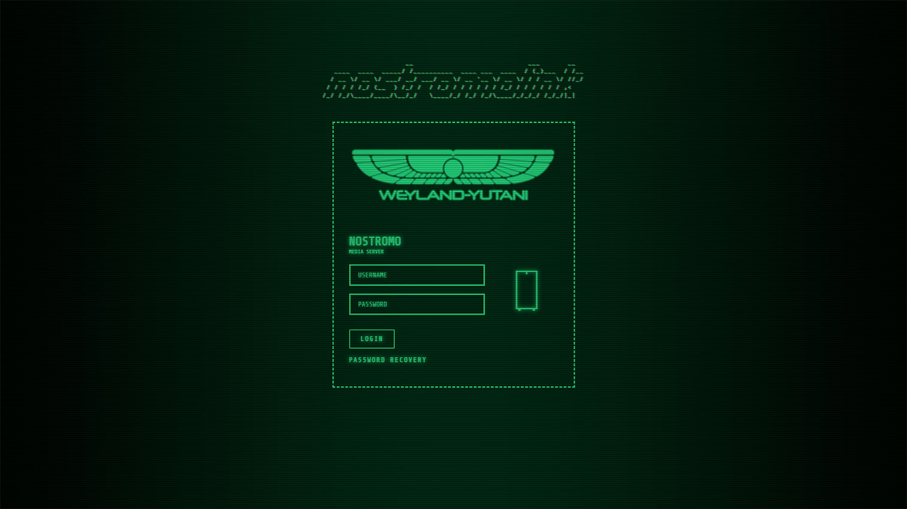
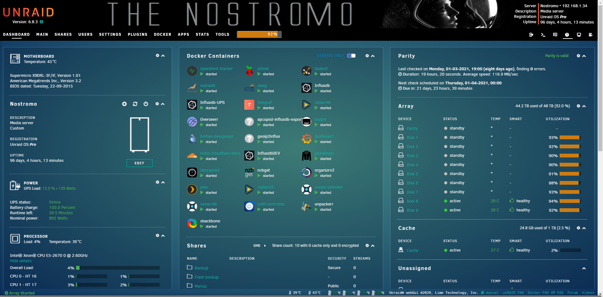
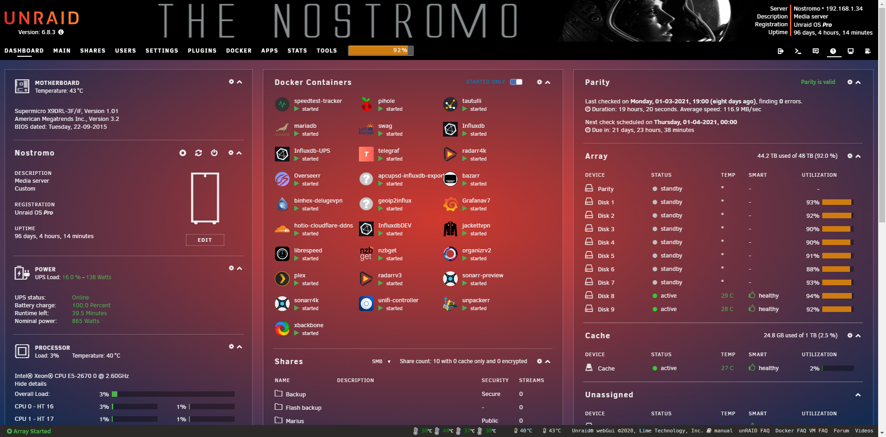
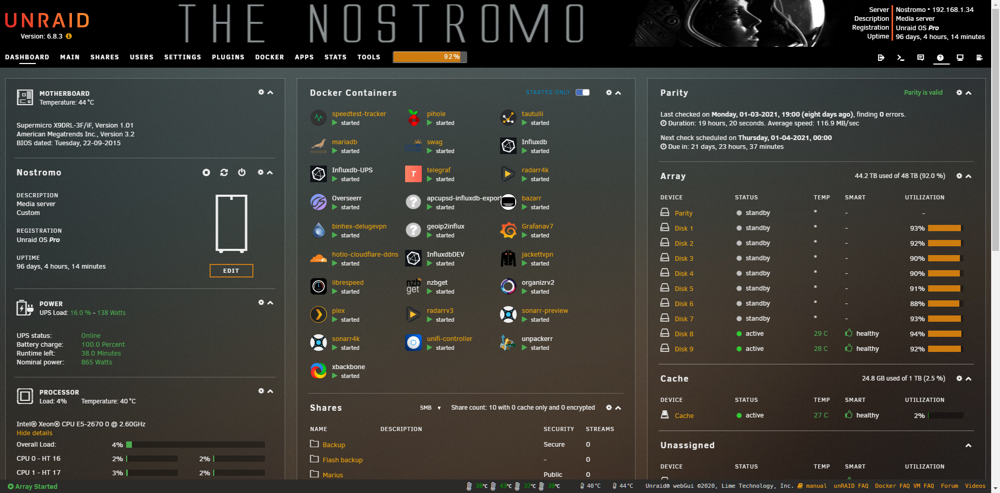
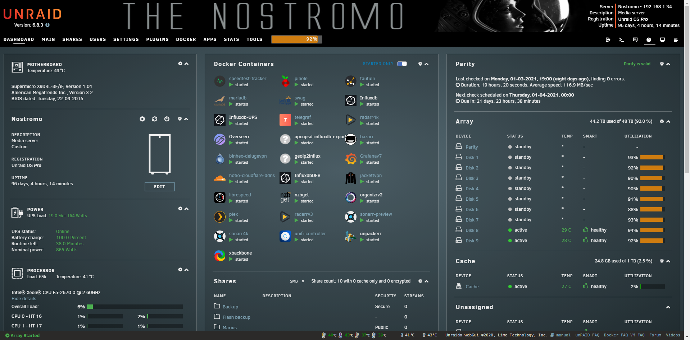
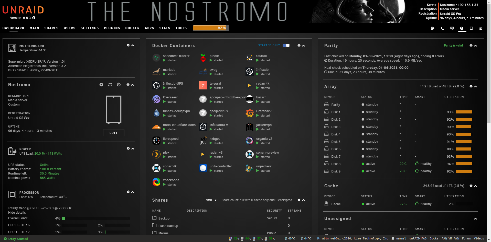

How to add a custom login page for Unraid!¶
Written: 2021-03-15
Tags
Category

As I said in my previous post, I have for some time now been creating css themes/skins for different applications that reside in the “media server/selfhosting” category.
That also included the Unraid webUI, but up until recently only the login page. Last week I added the rest of the WebUI to the theme suite.
Custom login page¶
The custom login page have 3 types with different sub themes.
Retro Terminal, Alien and Fallout
├── Retro Terminal
│ ├── amber.css
│ ├── red.css
│ ├── green.css
│ ├── blue.css
│ ├── white.css
│ └── custom.css /* Make it your own */
├── Alien
│ ├── hallway.css
│ ├── hallway2.css
│ ├── hallway3.css
│ ├── hallway4.css
│ ├── isolation.css
│ ├── isolation_video.css
│ ├── scanner.css
│ ├── nightmare.css
│ └── custom.css /* Make it your own */
└── Fallout
├── terminal.css
├── terminal2.css
├── dirty_terminal.css
├── dirty_terminal2.css
├── fallout_video.css
└── custom.css /* Make it your own */
Retro Terminal¶
{kind=link}
{kind=link}
{kind=link}
{kind=link}
{kind=link}
Alien¶
{kind=link}
{kind=link}
{kind=link}
{kind=link}
{kind=link}
Fallout¶
{kind=link}
{kind=link}
{kind=link}
{kind=link}
Installation¶
To install the custom css and javascript(optional) we must edit the html in the login.php file located at /usr/local/emhttp/login.php
To do that , I've created a bash script that uses sed to inject an html link tag for our custom css stylesheet.
If you're unfamiliar with running scripts, the easiest way to run would be to use the plugin**CA User Scripts.**
Install the plugin and add a new user script by clicking Add new script
Give it a name and click OK
Click or hover over the gear icon and click Edit Script
Paste the contents of the bash script:custom_login.sh
Below the shebang(#!/bin/bash) are the variables you need to change for the different themes.
The default values are the ones below
TYPE="retro-terminal"
THEME="green.css"
DOMAIN="theme-park.dev"
ADD_JS="true"
JS="custom_text_header.js"
DISABLE_THEME="false"
Set the values to what you like, and click Save Changes
To have the script applied at every boot, set the schedule to At Startup of Array
Now just click Run Scriptand it will print some text in the window.
Thats it.. logout and have a look at your new theme :)
Javascript¶
The javascript variable will add some custom html tags into the login page. The Retro Terminal javascript adds an animated <pre> tag that says nostromolink. It's inspired by a blog post by Stephen Brennan. If you want something else, there are a ton of ACSII generators out there.
Retro Terminal Javascript¶
- Set
ADD_JSto"true"to enable. - Set
JStocustom_text_header.js
Alien Theme Javascript¶
isolation.js
Injects an animated video wallpaper from the Alien: Isolation game.
- Set
THEMEtoisolation_video.css - Set
ADD_JSto"true" - Set
JStoisolation.js
Fallout Theme Javascript¶
please_stand_by.js
vault-tec-crt.js
vault-tec-crt_no-scanline.js
- Set
THEMEtofallout_video.css - Set
ADD_JSto"true"to enable. - Choose the video you want. See:videos
- Available js:
please_stand_by.js,vault-tec-crt.js,vault-tec-crt_no-scanline.js
- Available js:
- Set
JSto the one you want.
vault-tec-crt.js
vault-tec-crt_no-scanline.js
please_stand_by.js
FAQ¶
Backups¶
The script will create a backup of the login.php file if one does not exist.
Uninstall/Restore the original¶
To uninstall the theme set the variable DISABLE_THEME to "true"
Can I selfhost this?¶
Of course! Just clone the repo into your webserver. Remember to change the DOMAIN variable in the bash script.
My server is not connected to the internet! How can I add this?¶
With the current version of the bash script, that is not possible as it injects the stylesheet using the a URL and not a file path. However, nothing is stopping you from just doing some small changes to the script and replace the href urls to the path you stored the files. I will try and create a version of the script that is made for local hosting in the future.
I hate the flickering¶
To remove the background flickering you need to edit the css file. Now since you don't have any control over those files, you'll need to fork it and setup Github pages or selfhost them. You can't use the raw link from Github, as they don't pass the mime types.
The background flickering can be disabled by setting the--body-animation root variable to none
The <pre> tag flicker can be disabled by setting --custom-text-header-animation to none.
I hate the CRT lines¶
Set the --body-before and --body-after root variables to none
I want my own logo¶
Fork it and change the --logo variable or if you're using stylus ect, just add a new --logo root variable below the import line.
I don't like XYZ¶
To change the colors,background, logo ect you need to edit the css file. Now since you don't have any control over those files, you'll need to fork it and setup Github pages or selfhost the files. You can't use the raw link from Github, as they don't pass the mime types. Each css file have a bunch of variables you can change to your linking.
All CSS and javascript files can be found here: https://github.com/gilbN/theme.park/tree/master/css/addons/unraid/login-page
Example:
:root {
--main-bg-color:black;
--body-before:#00ff771a;
--body-after: #00ff7733;
--body-animation: flicker;
--logo: url(https://theme-park.dev/css/addons/unraid/login-page/alien/logo/wings_green.png) center no-repeat;
--text-color: #37f592;
--input-color: #37f592;
--link-color: #37f592;
--link-color-hover: #68ffff;
--case-color: #37f592;
--button-text-color: #37f592;
--button-text-color-hover: #000;
--button-color: #37f592;
--button-color-hover: #68ffff;
--selection-color: #68ffff;
--custom-text-header:#37f592;
--custom-text-header-shadow:#37f592;
--custom-text-header-animation: textflicker;
--input-font: 'Share Tech Mono', monospace;
--text-font: 'Share Tech Mono', monospace;
--loginbox-background-color: transparent;
--text-shadow: 0 0 8px;
--text-shadow-color: #37f592;
--box-shadow: 0 0 15px;
}
Custom Unraid Themes¶





Installation¶
The custom themes for the Unraid WebUI are the same as the ones in my theme.park repository.
Aquamarine, Hotline, Plex, Space-gray, Dark, and Organizr-dark.
The easiest way to add them is to use the Theme Engine plugin.
- Install theTheme Engineplugin from the CA appstore and open it.
- Set
Base Themeto black - Enable
Advanced View - Scroll down and set
Enable custom styling (below):toYes - Add the HTML below in the
Custom styling (advanced):textarea. Remember to change<THEME>to the theme you want.
</style><link type="text/css" rel="Stylesheet" href="https://theme-park.dev/css/themes/unraid/<THEME>.css" />
Example:
</style><link type="text/css" rel="Stylesheet" href="https://theme-park.dev/css/themes/unraid/plex.css" />